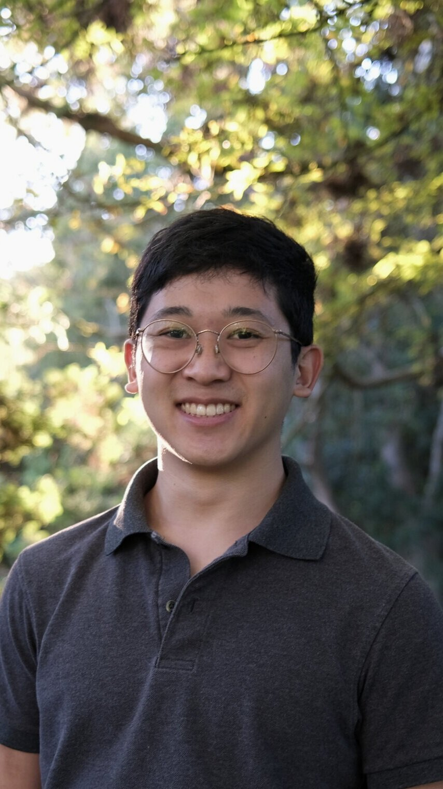
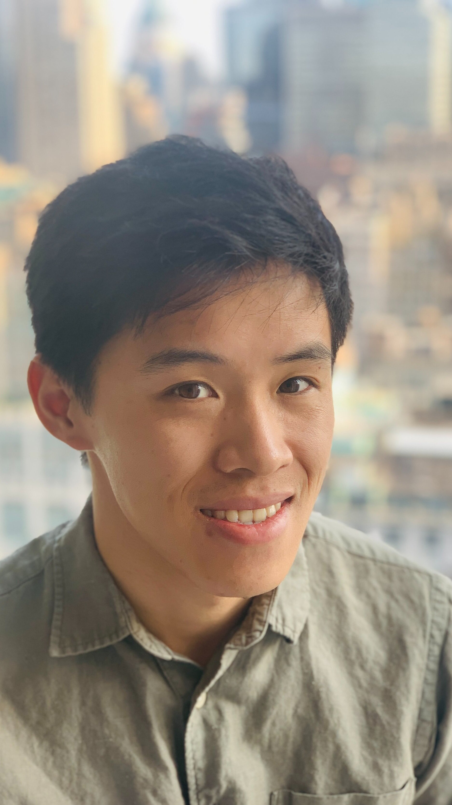
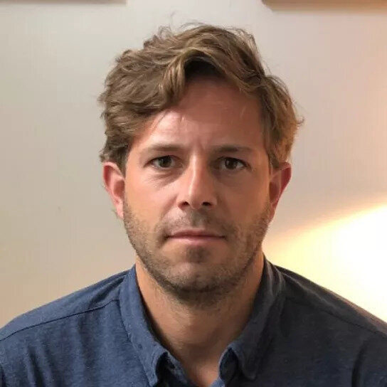
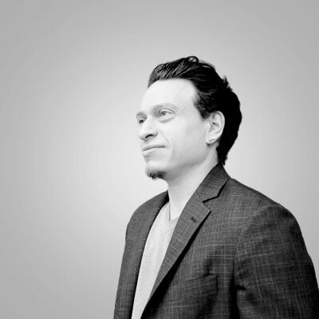

Co-founder
Alex Yang
An engineering background spanning performance and capacity at Facebook and data partnership optimization at Spotify. Alex graduated from UC Berkeley with a degree in Computer Science.
LinkedIn ↗The people behind the frame
Engineering, media, and new ways to connect.

Co-founder
An engineering background spanning performance and capacity at Facebook and data partnership optimization at Spotify. Alex graduated from UC Berkeley with a degree in Computer Science.
LinkedIn ↗
Co-founder
Previously at LinkedIn, responsible for development, deployment, and infrastructure resilience of video and article platforms. Before LinkedIn, Winson led statistical engineering validation projects at Apple. He holds a B.S. in Computer Engineering from UC San Diego.
LinkedIn ↗
Advisor
Managing Member, Bellnote Venture Partners

Advisor
CEO, Digital Remedy